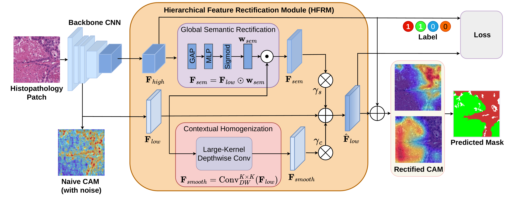

SSHR overview. Intermediate low-level features are rectified by deep global context and spatial homogenization before CAM formation, producing segmentation-ready activation maps without offline pseudo-mask refinement or second-stage retraining.
Abstract
Existing weakly supervised semantic segmentation methods in computational pathology rely on a multi-stage paradigm: class activation map generation, offline pseudo-mask refinement, and fully supervised retraining. While established, this decoupled approach incurs high computational training costs and suffers from error propagation, where local texture biases in shallow CNN layers generate false-positive artifacts that subsequent refinement steps often fail to correct. We propose Single-Stage Hierarchical Rectification (SSHR), a framework that proactively purifies intermediate feature representations during the forward pass. SSHR introduces a Hierarchical Feature Rectification Module that uses deep global semantic context to filter local anomalies in shallow layers, generating high-fidelity activation maps directly within a single training loop. Experiments on LUAD-HistoSeg and BCSS show that SSHR outperforms state-of-the-art multi-stage methods while reducing training duration by 2 to 5 times.